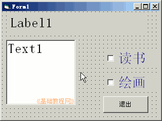
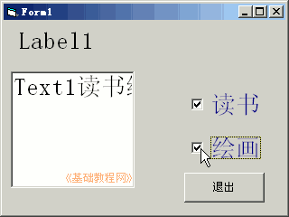

2011-2012 第一学期九年级 VB 教学课程设计
作者：TeliuTe 来源：基础教程网
十五、学会复选框 返回目录 下一课
学习目标：学会使用复选框，多项选择；
注意事项：下一节学单选，打好基础；
1、绘制控件
1）打开一个标准EXE，绘制一个标签，一个文本框，一个按钮，两个复选框
Label1的Caption属性改为“我的爱好：”
2）设置好控件的字体和颜色；

3）进入代码窗口，点击对象下拉列表，依次选择“Check1、Check2、Command1”，在出来的代码段中分别输入；
'Check1：
Text1.Text = Text1.Text + Check1.Caption
'Check2：
Text1.Text = Text1.Text + Check2.Caption
'Command1
end
4）保存为“第十五课”，点菜单“运行－启动”，点击复选框；

板书设计：第15课 学会复选框
1.1个窗体、标签、文本框、按钮
2.2个复选框(读书、绘画、运动、实践)
课后记 2011-12-15 10:56：
课还没准备，按照工具箱里的顺序学就可以了
这样不用费什么脑筋，把复选框学一下，投票里经常碰到
--
单选按钮放到下节课，要用框架难度稍稍有些多
跟七年级的内容重了，黑板地方不够写简单些内容
--
第一节上信技很高兴，笔记本都记着带来
进来就注意看黑板内容，提醒找一下规律
--
先控制机子让抄代码，对着黑板讲一下内容
把单词读一下，读的不好也没关系，自己还有些放不开那样
--
做的很快，竟然都做出来了，慢慢找到规律了吧
每次来回就是这几个控件，代码也简单
--
输入代码讲一下复制粘贴，把容易错的地方强调一下
少说话不用太操心学生，让自己多注意吧
--
学生有些浮躁，可能是期末天气冬天吧
说脏话男生，表现自己也许是，引起别人的注意力
本节学习了复选框的基础知识，如果你成功地完成了练习，请继续学习下一课内容；
返回目录 下一课
本教程由86团学校TeliuTe制作|著作权所有
基础教程网：http://teliute.org/
美丽的校园……
转载和引用本站内容，请保留版权信息和本站链接。